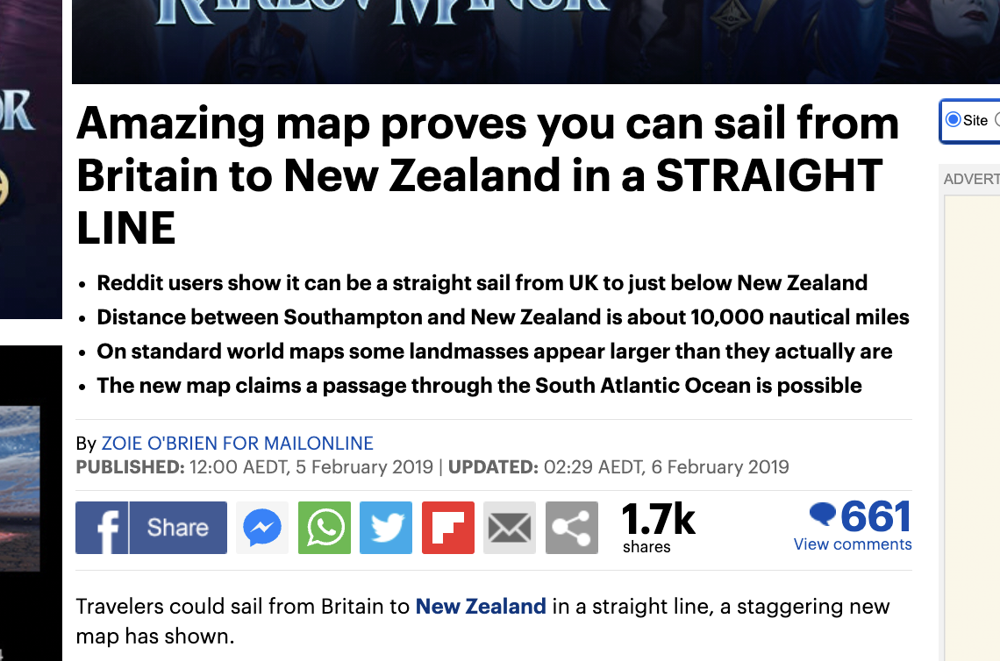
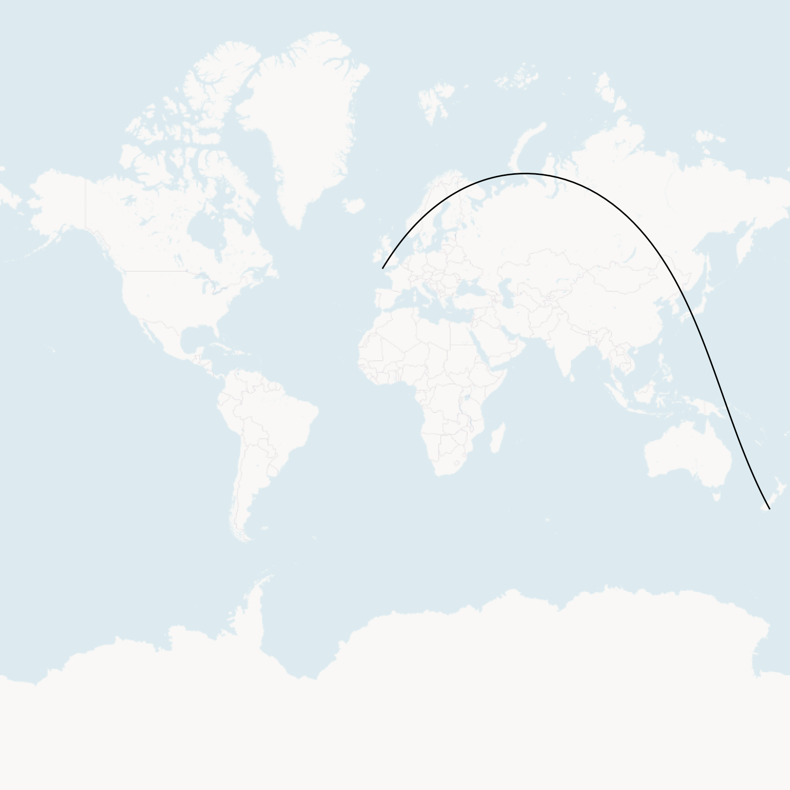
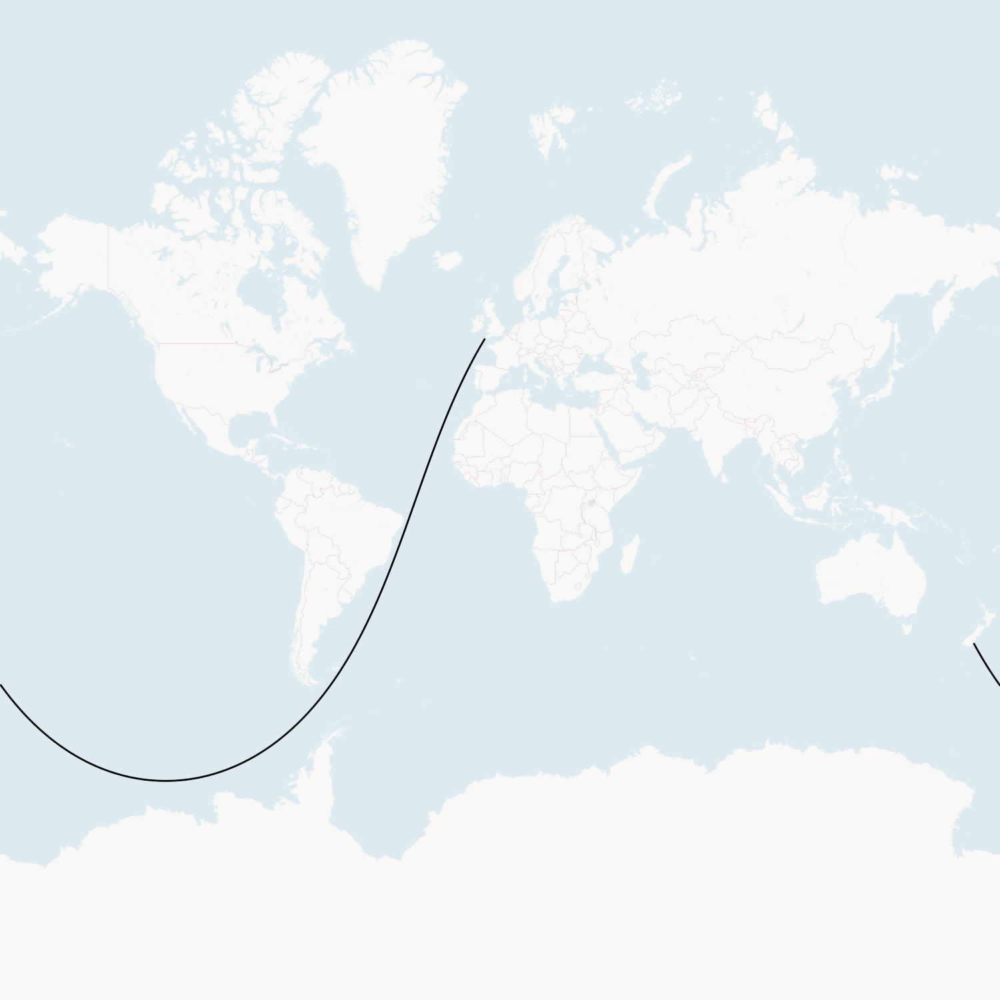

2024-02-02
Various articles on the web describe a straight-line sailing route from NZ to the UK. Here’s a screenshot (I won’t include a link):
A straight-line sailing path follows a great circle around the earth between two points and only passes over water.
As far as I can tell, the original source is this thread in r/MapPorn.
I was interested in working out how such a path could be calculated from first principles, primarily for my own curiosity. This blog post describes how I did that. The implementation is in Go, but it is simple enough that Go knowledge isn’t a prerequisite to understand this post.
Map coordinates are commonly represented as longitude/latitude pairs. I’ll represent the starting locations and the final path using longitude/latitude, but using an alternate representation for intermediate calculations will be helpful.
The general idea is as follows:
Convert the starting and ending locations to vectors in 3D Euclidean space. These vectors are on the surface of a sphere, representing the earth.
LERP (linearly interpolate) between the start and end 3D vectors. The interpolated vectors will go below the earth’s surface.
Normalise the interpolated vectors so that they jump back to the earth’s surface.
Convert each normalised vector back to longitude and latitude pairs.
The path can then be plotted using standard mapping software that works with longitude and latitudes.
First, I defined a type to hold a longitude/latitude pair and specified the start and end points:
type lonLat struct {
lon, lat float64
}
var (
uk = lonLat{-5.694201317313457, 50.05064986457697}
nz = lonLat{170.7311723591913, -45.88106959847547}
)
Then, I defined a vect type to hold 3D vectors:
type vect [3]float64
func (u vect) length() float64 {
return math.Sqrt(u[0]*u[0] + u[1]*u[1] + u[2]*u[2])
}
func (u vect) scale(f float64) vect {
return vect{u[0] * f, u[1] * f, u[2] * f}
}
Next is converting from the start and end longitude/latitude pairs to 3D vectors. Warning: the math might be scary if you last did trigonometry a while ago.
func lonLatToVect(pt lonLat) vect {
lon := degreesToRadians(pt.lon)
lat := degreesToRadians(pt.lat)
x := math.Cos(lon) * math.Cos(lat)
y := math.Sin(lon) * math.Cos(lat)
z := math.Sin(lat)
return [3]float64{x, y, z}
}
Next is the linear interpolation. For floats, this is just mixing together two
floats with a t ratio between 0 and 1. It’s the same thing for vectors, just
applied to each dimension separately.
func lerpFloat64(a, b, t float64) float64 {
return (1-t)*a + t*b
}
func lerpVect(a, b vect, t float64) vect {
return vect{
lerpFloat64(a[0], b[0], t),
lerpFloat64(a[1], b[1], t),
lerpFloat64(a[2], b[2], t),
}
}
We want to create many linearly interpolated points between the start and end locations. This is easy enough to do in a simple loop:
func interpolateVects(a, b vect, n int) []vect {
var vects []vect
for i := 0; i < n; i++ {
t := float64(i) / float64(n-1)
v := lerpVect(a, b, t)
vects = append(vects, v)
}
return vects
}
Finally, we must convert these interpolated vectors back to longitude/latitude pairs. This is the reverse of the original trigonometry used to convert from longitude/latitude pairs to 3D vectors.
func convertVectsToLonLats(vects []vect) []lonLat {
var points []lonLat
for _, v := range vects {
points = append(points, v.toLonLat())
}
return points
}
func (u vect) toLonLat() lonLat {
u = u.scale(1 / u.length())
x := u[0]
y := u[1]
z := u[2]
lon := math.Atan2(y, x)
lat := math.Asin(z)
return lonLat{
radiansToDegrees(lon),
radiansToDegrees(lat),
}
}
Tying it all together:
ukVect := lonLatToVect(uk)
nzVect := lonLatToVect(nz)
interpolateVects := interpolateVects(ukVect, nzVect, 1000)
interpolatedLonLats := convertVectsToLonLats(interpolateVects)
// ... display on map

Oops… this didn’t work as expected. A straight-line sailing route cannot go through land.
After some head scratching, I realised that two straight line paths can be taken along a great circle between any two points: the long way and the short way. Imagine travelling in a straight-line from London to New York. You can either go the short way (west, across the Atlantic Ocean) or the long way (east, across Eurasia, the Pacific Ocean, and North America)
The same thing is happening here. I’m plotting the short direction rather than the long direction.
This is easy enough to fix; we need to be explicit about the journey’s midpoint (it should be off the coast of South America rather than in Asia). To get that midpoint, we can take the midpoint between the start and end vectors and then scale it by -1 to “flip” it across to the other side of the earth.
ukVect := lonLatToVect(uk)
nzVect := lonLatToVect(nz)
midVect := lerpVect(ukVect, nzVect, 0.5).scale(-1)
interpolatedVects := append(
interpolateVects(ukVect, midVect, 1000),
interpolateVects(midVect, nzVect, 1000)...,
)
interpolatedLonLats := convertVectsToLonLats(interpolatedVects)
